## **scheduling | linux and real-time** ## **operating systems** ### csci 3411 ### Prof. **Sibin Mohan** <br> _<font size="5"> acknowledgments: some content modified from Gabe Parmer and West</font>_ --- so far we've seen... --- | topic | details | | --- | --- | | scheduling **goals** | utilization, waiting, response time, fairness | --- | topic | details | | --- | --- | | scheduling **goals** | utilization, waiting, response time, fairness | | **policies** | FCFS, RR, priority, multilevel feedback queues | --- | topic | details | | --- | --- | | scheduling **goals** | utilization, waiting, response time, fairness | | **policies** | FCFS, RR, priority, multilevel feedback queues | | every policy | **trades off** some goals | || --- today → two **dueling** schedulers --- ### dueling schedulers | case study | goal | approach | |---|---|---| | **Linux** [CFS] | work "well" for **most** workloads | heuristics | --- ### dueling schedulers | case study | goal | approach | |---|---|---| | **Linux** [CFS] | work "well" for **most** workloads | heuristics | | **real-time** | **guaranteed**, bounded responsiveness <br> for **specific** execution patterns | policies + **analysis** | || --- ### Linux | **scheduling goals** --- ### Linux | **scheduling goals** <p>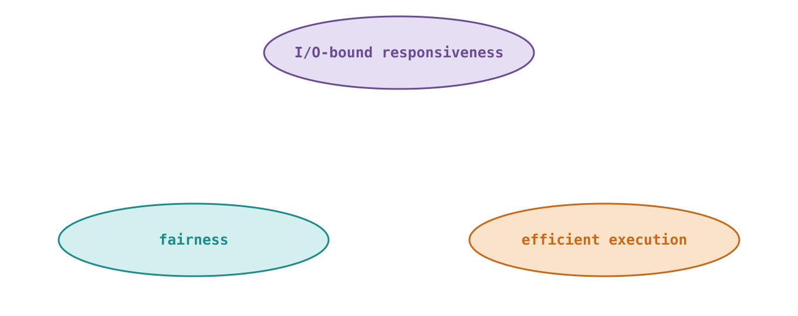</p> --- ### Linux | **scheduling goals** <p>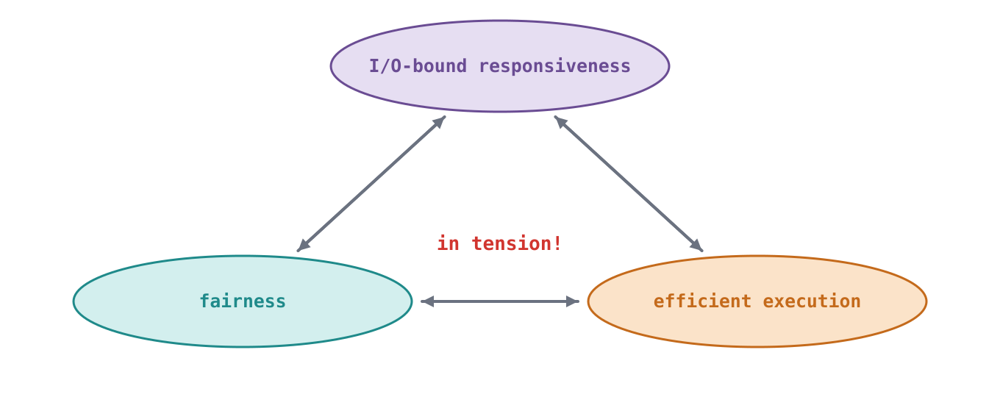</p> --- ### Linux | **goals in tension** | want | means | but... | |---|---|---| | **responsiveness** | favour I/O-bound threads | not **fair** | --- ### Linux | **goals in tension** | want | means | but... | |---|---|---| | **responsiveness** | favour I/O-bound threads | not **fair** | | **efficiency** | FIFO, few switches | one long thread **hogs** CPU | --- ### Linux | **goals in tension** | want | means | but... | |---|---|---| | **responsiveness** | favour I/O-bound threads | not **fair** | | **efficiency** | FIFO, few switches | one long thread **hogs** CPU | | **responsiveness** | more context switches | less **efficient** | || --- ## **CFS** | completely fair scheduler --- ### CFS | **history** | what | details | |---|---| | author | Ingo Molnár | --- ### CFS | **history** | what | details | |---|---| | author | Ingo Molnár | | introduced | Linux <scb>2.6.23</scb> [2007] | --- ### CFS | **history** | what | details | |---|---| | author | Ingo Molnár | | introduced | Linux <scb>2.6.23</scb> [2007] | | lineage | **weighted fair queueing** [packet scheduling] | --- ### CFS | **history** | what | details | |---|---| | author | Ingo Molnár | | introduced | Linux <scb>2.6.23</scb> [2007] | | lineage | **weighted fair queueing** [packet scheduling] | | theory | [**EEVDF**](https://people.eecs.berkeley.edu/~istoica/papers/eevdf-tr-95.pdf) <br> earliest eligible virtual deadline first [1995] | || --- ### CFS | **idea** <center><div class="center" data-id="box" style="height: 75px; width: 1200px; background: orange;"> threads get CPU time <b>proportional to their weight</b> </div></center> --- ### CFS | **idea** <center><div class="center" data-id="box" style="height: 75px; width: 1200px; background: orange;"> threads get CPU time <b>proportional to their weight</b> </div></center> <br> two threads, same weight → same share of CPU --- ### CFS | **share** - <scb>$N$</scb> → number of **runnable** threads --- ### CFS | **share** - <scb>$N$</scb> → number of **runnable** threads - $w_i$ → **weight** of thread $\tau_i$ --- ### CFS | **share** - <scb>$N$</scb> → number of **runnable** threads - $w_i$ → **weight** of thread $\tau_i$ $$share(\tau_i) = \frac{w_i}{\sum_j w_j}$$ --- ### CFS | **share** - <scb>$N$</scb> → number of **runnable** threads - $w_i$ → **weight** of thread $\tau_i$ $$share(\tau_i) = \frac{w_i}{\sum_j w_j}$$ higher weight → **bigger** share of CPU --- ### example | **CFS share** --- ### example | **CFS share** weights <scb>1</scb>, <scb>2</scb>, <scb>3</scb> <p>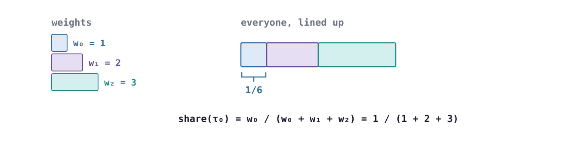</p> --- ### example | **CFS share** weights <scb>1</scb>, <scb>2</scb>, <scb>3</scb> $share(\tau_0) = \frac{1}{1 + 2 + 3} = \frac{1}{6}$ --- ### Linux | **weights** weights come from **nice** values <scb>-20</scb>..<scb>19</scb> --- ### Linux | **weights** weights come from **nice** values <scb>-20</scb>..<scb>19</scb> | nice | weight | notes | |:---:|:---:|---| | <scb>0</scb> | <scb>1024</scb> | default | --- ### Linux | **weights** weights come from **nice** values <scb>-20</scb>..<scb>19</scb> | nice | weight | notes | |:---:|:---:|---| | <scb>0</scb> | <scb>1024</scb> | default | | <scb>+1</scb> step | ÷ ~<scb>1.25</scb> | each step ≈ <scb>1.25</scb>x apart | --- ### Linux | **weights** weights come from **nice** values <scb>-20</scb>..<scb>19</scb> | nice | weight | notes | |:---:|:---:|---| | <scb>0</scb> | <scb>1024</scb> | default | | <scb>+1</scb> step | ÷ ~<scb>1.25</scb> | each step ≈ <scb>1.25</scb>x apart | | <scb>3</scb> | <scb>526</scb> | roughly **half** of nice <scb>0</scb> | | <scb>-20</scb> | <scb>88761</scb> | **highest** weight | | <scb>19</scb> | <scb>15</scb> | **lowest** weight | || --- let's **test** it! --- let's **test** it! - two **CPU-bound** processes - on **one** core - nice <scb>0</scb> vs nice <scb>3</scb> --- ```C /* nice_share.c: two CPU-bound processes on ONE core, nice 0 vs. nice 3 */ #define _GNU_SOURCE #include <sched.h> #include <stdio.h> #include <stdlib.h> #include <sys/resource.h> #include <sys/wait.h> #include <time.h> #include <unistd.h> double now(void) { struct timespec ts; clock_gettime(CLOCK_MONOTONIC, &ts); return ts.tv_sec + ts.tv_nsec / 1e9; } int main(void) { int nices[2] = {0, 3}; cpu_set_t one; CPU_ZERO(&one); CPU_SET(0, &one); for (int i = 0; i < 2; i++) { if (fork() == 0) { sched_setaffinity(0, sizeof(one), &one); /* both on core 0 */ setpriority(PRIO_PROCESS, 0, nices[i]); double end = now() + 3.0; while (now() < end) /* spin for 3 s */ ; struct rusage ru; getrusage(RUSAGE_SELF, &ru); printf("nice %d: %.2f s of CPU\n", nices[i], ru.ru_utime.tv_sec + ru.ru_utime.tv_usec / 1e6 + ru.ru_stime.tv_sec + ru.ru_stime.tv_usec / 1e6); exit(0); } } while (wait(NULL) > 0) ; return 0; } ``` --- ```C [20|23-24|27|28|29-31|33-36] /* nice_share.c: two CPU-bound processes on ONE core, nice 0 vs. nice 3 */ #define _GNU_SOURCE #include <sched.h> #include <stdio.h> #include <stdlib.h> #include <sys/resource.h> #include <sys/wait.h> #include <time.h> #include <unistd.h> double now(void) { struct timespec ts; clock_gettime(CLOCK_MONOTONIC, &ts); return ts.tv_sec + ts.tv_nsec / 1e9; } int main(void) { int nices[2] = {0, 3}; cpu_set_t one; CPU_ZERO(&one); CPU_SET(0, &one); for (int i = 0; i < 2; i++) { if (fork() == 0) { sched_setaffinity(0, sizeof(one), &one); /* both on core 0 */ setpriority(PRIO_PROCESS, 0, nices[i]); double end = now() + 3.0; while (now() < end) /* spin for 3 s */ ; struct rusage ru; getrusage(RUSAGE_SELF, &ru); printf("nice %d: %.2f s of CPU\n", nices[i], ru.ru_utime.tv_sec + ru.ru_utime.tv_usec / 1e6 + ru.ru_stime.tv_sec + ru.ru_stime.tv_usec / 1e6); exit(0); } } while (wait(NULL) > 0) ; return 0; } ``` --- ```C /* nice_share.c: two CPU-bound processes on ONE core, nice 0 vs. nice 3 */ #define _GNU_SOURCE #include <sched.h> #include <stdio.h> #include <stdlib.h> #include <sys/resource.h> #include <sys/wait.h> #include <time.h> #include <unistd.h> double now(void) { struct timespec ts; clock_gettime(CLOCK_MONOTONIC, &ts); return ts.tv_sec + ts.tv_nsec / 1e9; } int main(void) { int nices[2] = {0, 3}; cpu_set_t one; CPU_ZERO(&one); CPU_SET(0, &one); for (int i = 0; i < 2; i++) { if (fork() == 0) { sched_setaffinity(0, sizeof(one), &one); /* both on core 0 */ setpriority(PRIO_PROCESS, 0, nices[i]); double end = now() + 3.0; while (now() < end) /* spin for 3 s */ ; struct rusage ru; getrusage(RUSAGE_SELF, &ru); printf("nice %d: %.2f s of CPU\n", nices[i], ru.ru_utime.tv_sec + ru.ru_utime.tv_usec / 1e6 + ru.ru_stime.tv_sec + ru.ru_stime.tv_usec / 1e6); exit(0); } } while (wait(NULL) > 0) ; return 0; } ``` --- what split do you expect? --- ### Linux | **weights** ``` $ ./nice_share nice 3: 1.02 s of CPU nice 0: 1.98 s of CPU ``` weights <scb>1024</scb> : <scb>526</scb> --- ### Linux | **weights** ``` $ ./nice_share nice 3: 1.02 s of CPU nice 0: 1.98 s of CPU ``` weights <scb>1024</scb> : <scb>526</scb> $$\frac{1024}{1024 + 526} \approx 0.66 \qquad \frac{526}{1024 + 526} \approx 0.34$$ --- ### Linux | **weights** ``` $ ./nice_share nice 3: 1.02 s of CPU nice 0: 1.98 s of CPU ``` weights <scb>1024</scb> : <scb>526</scb> $$\frac{1024}{1024 + 526} \approx 0.66 \qquad \frac{526}{1024 + 526} \approx 0.34$$ exactly what we **measured**! Note: - actual runs: 3 of 3 gave 1.98 s/1.02 s on a 7.0 kernel (8 cores, both pinned to core 0). --- ### CFS | **timeslices** --- ### CFS | **timeslices** 1. aim for **<scb>20</scb> ms** responsiveness --- ### CFS | **timeslices** 1. aim for **<scb>20</scb> ms** responsiveness - why? --- ### CFS | **timeslices** 1. aim for **<scb>20</scb> ms** responsiveness - why? humans notice lag at **10s of ms** - every runnable thread runs within ~<scb>20</scb> ms --- ### CFS | **timeslices** 1. aim for **<scb>20</scb> ms** responsiveness 2. preemptions at least **<scb>4</scb> ms** apart --- ### CFS | **timeslices** 1. aim for **<scb>20</scb> ms** responsiveness 2. preemptions at least **<scb>4</scb> ms** apart - why? --- ### CFS | **timeslices** 1. aim for **<scb>20</scb> ms** responsiveness 2. preemptions at least **<scb>4</scb> ms** apart - why? context switches **aren't free** - **bound** overhead → keep utilization high --- ### CFS | **timeslices** [both **heuristics**, tunable → real defaults scale with number of cores] --- ### CFS | **timeslices** weights <scb>1</scb>, <scb>2</scb> → <scb>3</scb> units in <scb>20</scb> ms <p>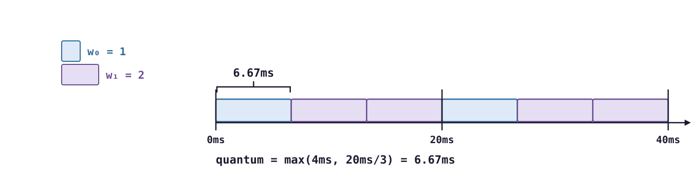</p> --- ### CFS | **timeslices** weights <scb>1</scb>, <scb>2</scb>, <scb>3</scb> → $\frac{20}{6} < 4$ → use <scb>4</scb> ms <p>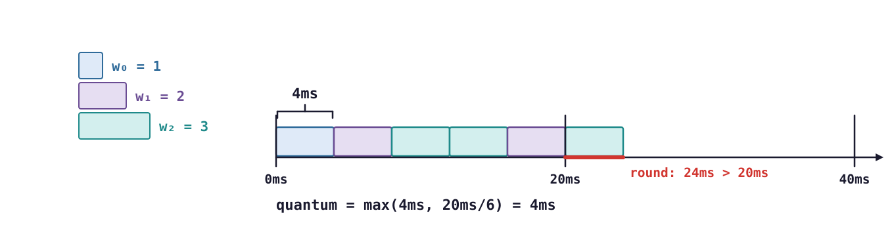</p> --- ### CFS | **timeslices** weights <scb>1</scb>, <scb>2</scb>, <scb>3</scb> → $\frac{20}{6} < 4$ → use <scb>4</scb> ms minimum quantum **wins** → round takes <scb>24</scb> ms, not <scb>20</scb>! --- ### CFS | **tracking execution** --- ### CFS | **tracking execution** track each thread's **weighted** execution time --- ### CFS | **tracking execution** track each thread's **weighted** execution time - $exec_i$ → **actual** execution time of $\tau_i$ - $w_i$ → **weight** of $\tau_i$ --- ### CFS | **tracking execution** track each thread's **weighted** execution time - $exec_i$ → **actual** execution time of $\tau_i$ - $w_i$ → **weight** of $\tau_i$ $$we_i = \frac{exec_i}{w_i}$$ --- ### CFS | **tracking execution** track each thread's **weighted** execution time - $exec_i$ → **actual** execution time of $\tau_i$ - $w_i$ → **weight** of $\tau_i$ $$we_i = \frac{exec_i}{w_i}$$ always run thread with **lowest** $we_i$ --- ### example | **tracking execution** weights <scb>1</scb>, <scb>2</scb>, <scb>3</scb> --- ### example | **tracking execution** all start at <scb>0</scb> → run $\tau_{0}$ <div class="multicolumn" style="display: grid; grid-template-columns: 50% 50%; gap: 20px; align-items: center;"> <div> <p>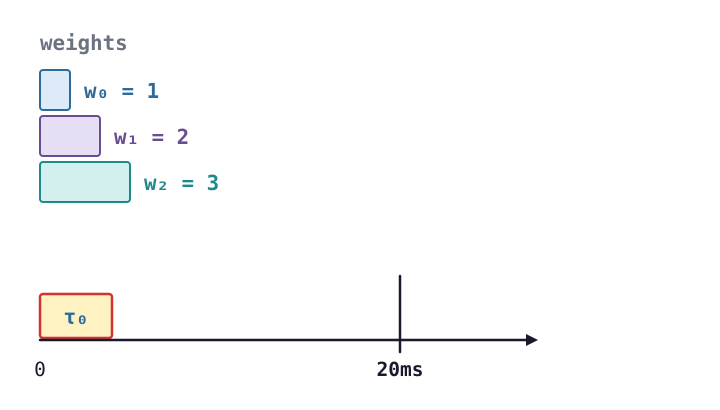</p> </div> <div> | ms | $\tau_{0}$ | $\tau_{1}$ | $\tau_{2}$ | |:---:|:---:|:---:|:---:| | <scb>4</scb> | **<scb>4</scb>** | <scb>0</scb> | <scb>0</scb> | </div> </div> --- ### example | **tracking execution** $\tau_{1}$, $\tau_{2}$ tie at <scb>0</scb> → run $\tau_{1}$ <div class="multicolumn" style="display: grid; grid-template-columns: 50% 50%; gap: 20px; align-items: center;"> <div> <p>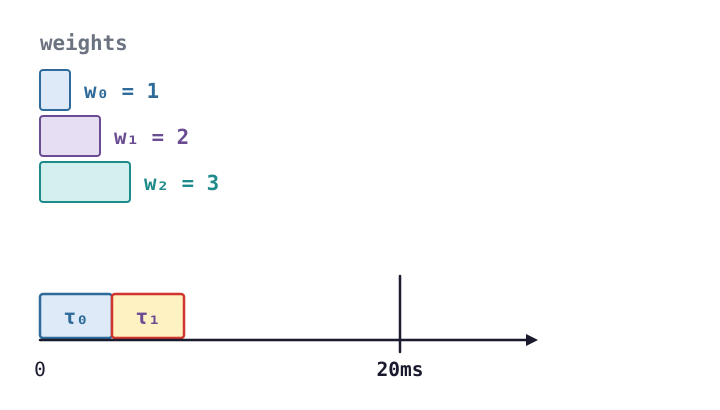</p> </div> <div> | ms | $\tau_{0}$ | $\tau_{1}$ | $\tau_{2}$ | |:---:|:---:|:---:|:---:| | <scb>4</scb> | **<scb>4</scb>** | <scb>0</scb> | <scb>0</scb> | | <scb>8</scb> | <scb>4</scb> | **<scb>4/2</scb>** | <scb>0</scb> | </div> </div> --- ### example | **tracking execution** $\tau_{2}$ lowest → run it <div class="multicolumn" style="display: grid; grid-template-columns: 50% 50%; gap: 20px; align-items: center;"> <div> <p>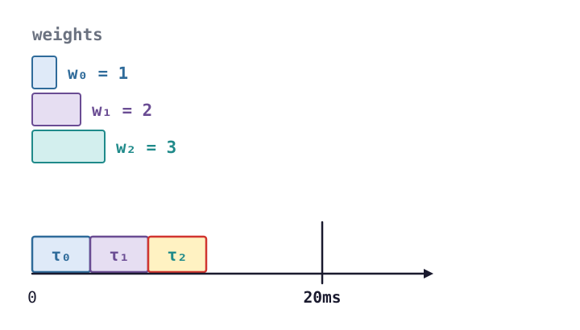</p> </div> <div> | ms | $\tau_{0}$ | $\tau_{1}$ | $\tau_{2}$ | |:---:|:---:|:---:|:---:| | <scb>4</scb> | **<scb>4</scb>** | <scb>0</scb> | <scb>0</scb> | | <scb>8</scb> | <scb>4</scb> | **<scb>4/2</scb>** | <scb>0</scb> | | <scb>12</scb> | <scb>4</scb> | <scb>4/2</scb> | **<scb>4/3</scb>** | </div> </div> --- ### example | **tracking execution** $\tau_{2}$ still lowest [<scb>4/3</scb>] <div class="multicolumn" style="display: grid; grid-template-columns: 50% 50%; gap: 20px; align-items: center;"> <div> <p>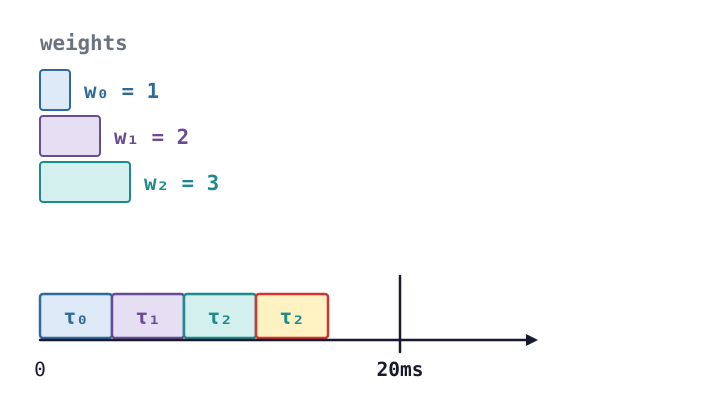</p> </div> <div> | ms | $\tau_{0}$ | $\tau_{1}$ | $\tau_{2}$ | |:---:|:---:|:---:|:---:| | <scb>4</scb> | **<scb>4</scb>** | <scb>0</scb> | <scb>0</scb> | | <scb>8</scb> | <scb>4</scb> | **<scb>4/2</scb>** | <scb>0</scb> | | <scb>12</scb> | <scb>4</scb> | <scb>4/2</scb> | **<scb>4/3</scb>** | | <scb>16</scb> | <scb>4</scb> | <scb>4/2</scb> | **<scb>8/3</scb>** | </div> </div> --- ### example | **tracking execution** $\tau_{1}$ lowest [<scb>2</scb>] <div class="multicolumn" style="display: grid; grid-template-columns: 50% 50%; gap: 20px; align-items: center;"> <div> <p>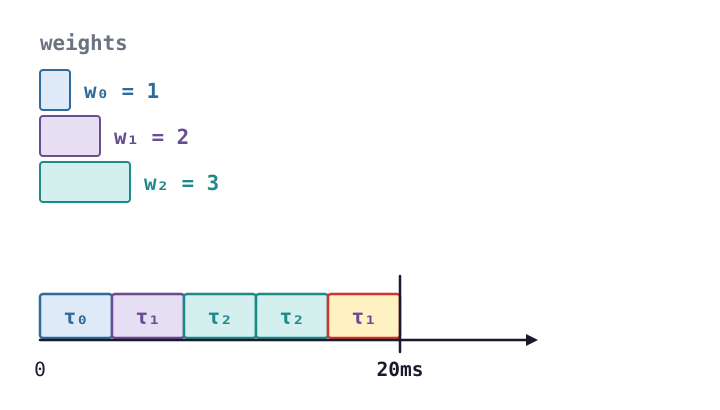</p> </div> <div> | ms | $\tau_{0}$ | $\tau_{1}$ | $\tau_{2}$ | |:---:|:---:|:---:|:---:| | <scb>4</scb> | **<scb>4</scb>** | <scb>0</scb> | <scb>0</scb> | | <scb>8</scb> | <scb>4</scb> | **<scb>4/2</scb>** | <scb>0</scb> | | <scb>12</scb> | <scb>4</scb> | <scb>4/2</scb> | **<scb>4/3</scb>** | | <scb>16</scb> | <scb>4</scb> | <scb>4/2</scb> | **<scb>8/3</scb>** | | <scb>20</scb> | <scb>4</scb> | **<scb>8/2</scb>** | <scb>8/3</scb> | </div> </div> --- ### example | **tracking execution** $\tau_{2}$ lowest [<scb>8/3</scb>] <div class="multicolumn" style="display: grid; grid-template-columns: 50% 50%; gap: 20px; align-items: center;"> <div> <p>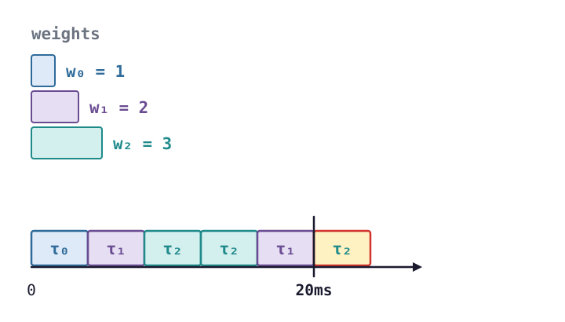</p> </div> <div> | ms | $\tau_{0}$ | $\tau_{1}$ | $\tau_{2}$ | |:---:|:---:|:---:|:---:| | <scb>4</scb> | **<scb>4</scb>** | <scb>0</scb> | <scb>0</scb> | | <scb>8</scb> | <scb>4</scb> | **<scb>4/2</scb>** | <scb>0</scb> | | <scb>12</scb> | <scb>4</scb> | <scb>4/2</scb> | **<scb>4/3</scb>** | | <scb>16</scb> | <scb>4</scb> | <scb>4/2</scb> | **<scb>8/3</scb>** | | <scb>20</scb> | <scb>4</scb> | **<scb>8/2</scb>** | <scb>8/3</scb> | | <scb>24</scb> | <scb>4</scb> | <scb>8/2</scb> | **<scb>12/3</scb>** | || </div> </div> --- ### CFS | **tracking execution** - at <scb>24</scb> ms → $we_i = 4$ for **all** threads --- ### CFS | **tracking execution** - at <scb>24</scb> ms → $we_i = 4$ for **all** threads - each ran **in proportion** to its weight --- ### CFS | **tracking execution** - at <scb>24</scb> ms → $we_i = 4$ for **all** threads - each ran **in proportion** to its weight <br> <br> <center><div class="center" data-id="box" style="height: 75px; width: 380px; background: orange;"> <b>weighted fair!</b> </div></center> --- ### CFS | **runqueue** <p>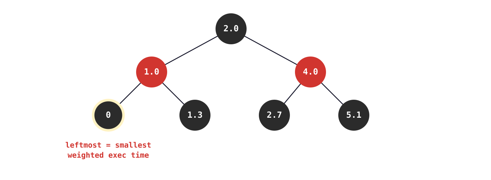</p> --- ### CFS | **runqueue** <div class="multicolumn" style="display: grid; grid-template-columns: 50% 50%; gap: 20px; align-items: center;"> <div> <p>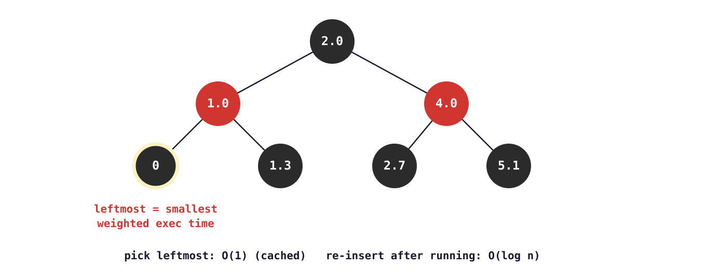</p> </div> <div> ||| |---|---| | **red-black** tree | balanced binary tree | </div> </div> --- ### CFS | **runqueue** <div class="multicolumn" style="display: grid; grid-template-columns: 50% 50%; gap: 20px; align-items: center;"> <div> </div> <div> ||| |---|---| | **red-black** tree | balanced binary tree | | sorted by | **weighted** exec time | </div> </div> --- ### CFS | **runqueue** <div class="multicolumn" style="display: grid; grid-template-columns: 50% 50%; gap: 20px; align-items: center;"> <div> </div> <div> ||| |---|---| | **red-black** tree | balanced binary tree | | sorted by | **weighted** exec time | | **leftmost** node | runs **next** | || </div> </div> --- Linux calls it **vruntime** --- Linux calls it **vruntime** every process has one! --- ### Linux | <scb>/proc/self/sched</scb> ``` $ head -12 /proc/self/sched head (6635, #threads: 1) ------------------------------------------------------------------- se.exec_start : 1840166593.695588 se.vruntime : 6331.275093 se.sum_exec_runtime : 0.138208 se.nr_migrations : 0 nr_switches : 0 nr_voluntary_switches : 0 nr_involuntary_switches : 0 se.load.weight : 1048576 ``` --- ### Linux | <scb>/proc/self/sched</scb> | field | meaning | notes | | --- | --- | --- | | <scb>se.vruntime</scb> | **weighted** exec time | [ms] | --- ### Linux | <scb>/proc/self/sched</scb> | field | meaning | notes | | --- | --- | --- | | <scb>se.vruntime</scb> | **weighted** exec time | [ms] | | <scb>se.sum_exec_runtime</scb> | **real** exec time | [ms] | --- ### Linux | <scb>/proc/self/sched</scb> | field | meaning | notes | | --- | --- | --- | | <scb>se.vruntime</scb> | **weighted** exec time | [ms] | | <scb>se.sum_exec_runtime</scb> | **real** exec time | [ms] | | <scb>se.load.weight</scb> | <scb>1024</scb> × <scb>1024</scb> | nice <scb>0</scb> <br> fixed-point | || --- ### CFS | **summary** --- ### CFS | **summary** | goal | mechanism | effect | |---|---|---| | small **response time** | pack **all** timeslices | within ~<scb>20</scb> ms | --- ### CFS | **summary** | goal | mechanism | effect | |---|---|---| | small **response time** | pack **all** timeslices | within ~<scb>20</scb> ms | | favour **I/O-bound** | wake with **small** vruntime | runs **soon** | --- ### CFS | **summary** | goal | mechanism | effect | |---|---|---| | small **response time** | pack **all** timeslices | within ~<scb>20</scb> ms | | favour **I/O-bound** | wake with **small** vruntime | runs **soon** | | high **utilization** | **minimum** quantum | <scb>4</scb> ms | --- ### CFS | **summary** | goal | mechanism | effect | |---|---|---| | small **response time** | pack **all** timeslices | within ~<scb>20</scb> ms | | favour **I/O-bound** | wake with **small** vruntime | runs **soon** | | high **utilization** | **minimum** quantum | <scb>4</scb> ms | | **fairness** | **every** runnable thread | gets a share | --- ### CFS | **summary** | goal | mechanism | effect | |---|---|---| | small **response time** | pack **all** timeslices | within ~<scb>20</scb> ms | | favour **I/O-bound** | wake with **small** vruntime | runs **soon** | | high **utilization** | **minimum** quantum | <scb>4</scb> ms | | **fairness** | **every** runnable thread | gets a share | | **prioritization** | weights | **weighted** share | || --- ### CFS | **waking up** woken thread's vruntime: - set just below **minimum** in tree --- ### CFS | **waking up** woken thread's vruntime: - set just below **minimum** in tree - **not** reset to <scb>0</scb> --- ### CFS | **waking up** woken thread's vruntime: - set just below **minimum** in tree - **not** reset to <scb>0</scb> <br> long sleepers → **can't hog** CPU! --- ### CFS | **theory** | what | details | |---|---| | theoretical backing | EEVDF → **bounds** on received CPU time | --- ### CFS | **theory** | what | details | |---|---| | theoretical backing | EEVDF → **bounds** on received CPU time | | Linux <scb>6.6</scb> [2023] | CFS **replaced** by EEVDF itself! | || --- ### CFS | **theory** | what | details | |---|---| | theoretical backing | EEVDF → **bounds** on received CPU time | | Linux <scb>6.6</scb> [2023] | CFS **replaced** by EEVDF itself! | <br> [see [EEVDF scheduler](https://docs.kernel.org/scheduler/sched-eevdf.html)] --- so, why use CFS at all? --- ### CFS | **pros** - **no** assumptions about workload --- ### CFS | **pros** - **no** assumptions about workload - **fair** → share proportional to weight --- ### CFS | **pros** - **no** assumptions about workload - **fair** → share proportional to weight - **responsive** → woken threads run soon --- ### CFS | **pros** - **no** assumptions about workload - **fair** → share proportional to weight - **responsive** → woken threads run soon - cheap decisions → $O(\log N)$ red-black tree --- but...what's the **catch**? --- ### CFS | **cons** share depends on: - **how many** threads are runnable - their **weights** --- ### CFS | **cons** share depends on: - **how many** threads are runnable - their **weights** <br> changes **dynamically**! --- ### CFS | **cons** guaranteed to run <scb>$e$</scb> time units within window <scb>$w$</scb>? --- ### CFS | **cons** ## **no!** --- some systems **<span style="background-color: darkred; color: white;"> need </span>** that guarantee! --- so, how do we **guarantee** timing? --- ## real-time **scheduling** --- computation that **controls** the physical world --- ### real-time systems | **examples** | domain | examples | | --- | --- | | vehicles | quadcopters, AVs, rovers | --- ### real-time systems | **examples** | domain | examples | | --- | --- | | vehicles | quadcopters, AVs, rovers | | transport | planes, trains, automobiles | --- ### real-time systems | **examples** | domain | examples | | --- | --- | | vehicles | quadcopters, AVs, rovers | | transport | planes, trains, automobiles | | infrastructure | industrial plants, cities, power generation | --- ### real-time systems | **examples** | domain | examples | | --- | --- | | vehicles | quadcopters, AVs, rovers | | transport | planes, trains, automobiles | | infrastructure | industrial plants, cities, power generation | | devices | Internet of Things [IoT] | || --- ### real-time systems | **why different?** how is this **not** "computation as normal"? --- ### real-time systems | **why different?** how is this **not** "computation as normal"? - results must arrive **in time** --- ### real-time systems | **why different?** how is this **not** "computation as normal"? - results must arrive **in time** - deadline comes from **physics**! --- ### real-time | **time-awareness** _e.g._ anti-lock brakes [ABS] <p>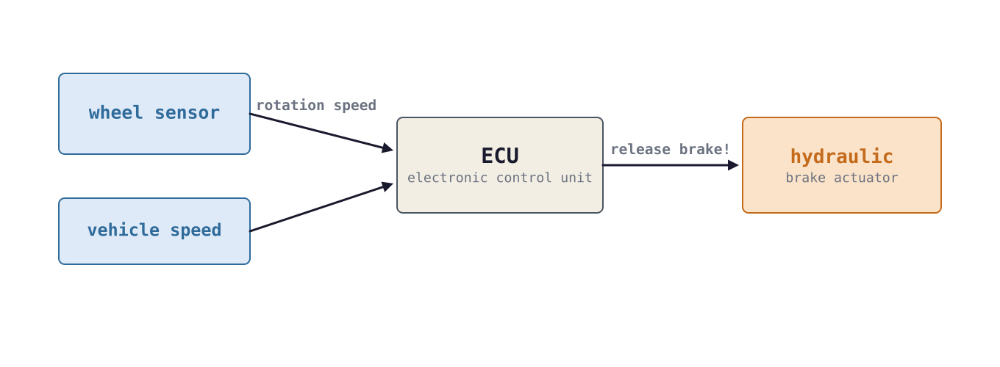</p> --- ### example | **ABS** --- ### example | **ABS** 1. brake hard → wheel **locks** - starts to **skid** --- ### example | **ABS** 1. brake hard → wheel **locks** - starts to **skid** 2. skidding → **less** friction - car stops **later** --- ### example | **ABS** 1. brake hard → wheel **locks** - starts to **skid** 2. skidding → **less** friction - car stops **later** 3. ECU sees wheel speed < vehicle speed - **releases** brake --- ### real-time | **time-awareness** adhere → to **world's** timing constraints <p>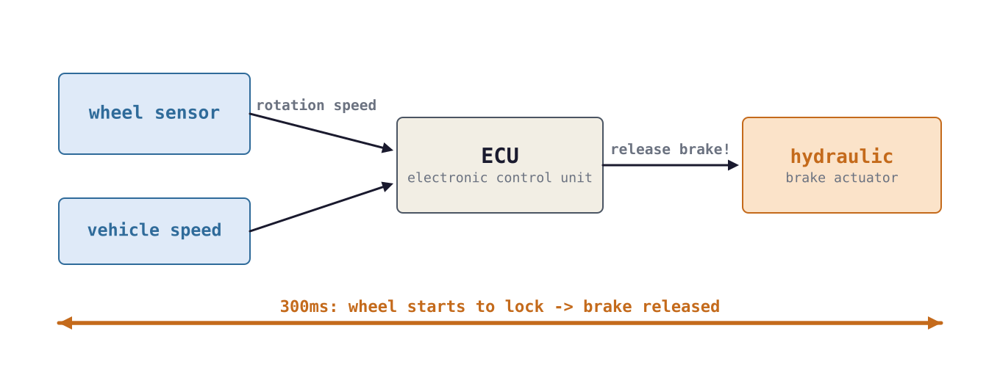</p> --- ### real-time | **time-awareness** adhere → to **world's** timing constraints <p>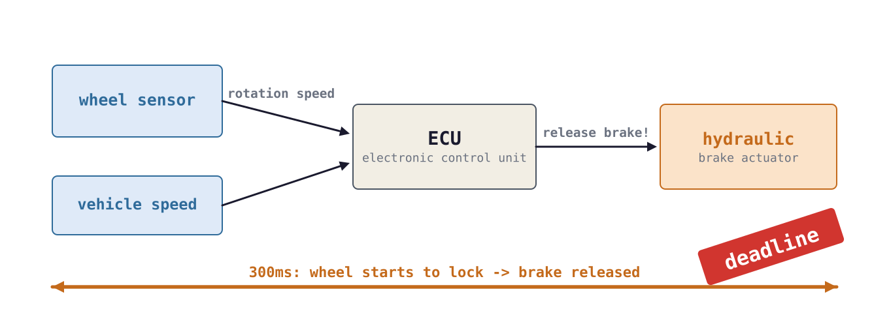</p> --- ### real-time | **time-awareness** <scb>300</scb> ms covers: - sensor - network - ECU - actuator --- ### real-time | **time-awareness** <scb>300</scb> ms covers: - sensor - network - ECU - actuator ECU's **own** deadline → **shorter**! --- ### aside | **sensors are amazing** | sensor | measures | senses | converts to | |---|---|---|---| | **pitot tube** | airspeed | pressure [piezo-electric] | voltage | --- ### aside | **sensors are amazing** | sensor | measures | senses | converts to | |---|---|---|---| | **pitot tube** | airspeed | pressure [piezo-electric] | voltage | | **O<sub>2</sub>** sensor | air:fuel mix <br> [goal ≈ <scb>14.7:1</scb>] | temperature + O<sub>2</sub> | voltage | --- ### aside | **sensors are amazing** | sensor | measures | senses | converts to | |---|---|---|---| | **pitot tube** | airspeed | pressure [piezo-electric] | voltage | | **O<sub>2</sub>** sensor | air:fuel mix <br> [goal ≈ <scb>14.7:1</scb>] | temperature + O<sub>2</sub> | voltage | | **knock** sensor | engine timing | vibration | voltage | || --- ### aside | **O<sub>2</sub> sensor** | mixture | result | | --- | --- | | too much O<sub>2</sub> [**lean**] | more nitrogen oxides [NO<sub>x</sub>] | --- ### aside | **O<sub>2</sub> sensor** | mixture | result | | --- | --- | | too much O<sub>2</sub> [**lean**] | more nitrogen oxides [NO<sub>x</sub>] | | too much fuel [**rich**] | more carbon **monoxide** [CO] <br> unburnt fuel | || --- ### real-time | **deadline examples** | domain | deadline | |---|---| | human **control** [react] | ~<scb>300</scb> ms [~<scb>150</scb> ms for esports pros] | --- ### real-time | **deadline examples** | domain | deadline | |---|---| | human **control** [react] | ~<scb>300</scb> ms [~<scb>150</scb> ms for esports pros] | | human **perception** [AR/VR] | ~<scb>10</scb> ms | --- ### real-time | **deadline examples** | domain | deadline | |---|---| | human **control** [react] | ~<scb>300</scb> ms [~<scb>150</scb> ms for esports pros] | | human **perception** [AR/VR] | ~<scb>10</scb> ms | | robot regulating **force** | <scb>1</scb> ms | --- ### real-time | **deadline examples** | domain | deadline | |---|---| | human **control** [react] | ~<scb>300</scb> ms [~<scb>150</scb> ms for esports pros] | | human **perception** [AR/VR] | ~<scb>10</scb> ms | | robot regulating **force** | <scb>1</scb> ms | | **walking** robots | < <scb>4</scb> ms | --- ### real-time | **deadline examples** | domain | deadline | |---|---| | human **control** [react] | ~<scb>300</scb> ms [~<scb>150</scb> ms for esports pros] | | human **perception** [AR/VR] | ~<scb>10</scb> ms | | robot regulating **force** | <scb>1</scb> ms | | **walking** robots | < <scb>4</scb> ms | | **manipulating** robots | < <scb>10</scb> ms | --- ### real-time | **deadline examples** | domain | deadline | |---|---| | human **control** [react] | ~<scb>300</scb> ms [~<scb>150</scb> ms for esports pros] | | human **perception** [AR/VR] | ~<scb>10</scb> ms | | robot regulating **force** | <scb>1</scb> ms | | **walking** robots | < <scb>4</scb> ms | | **manipulating** robots | < <scb>10</scb> ms | | **driving** robots | < <scb>100</scb> ms | --- ### real-time | **deadline examples** | domain | deadline | |---|---| | human **control** [react] | ~<scb>300</scb> ms [~<scb>150</scb> ms for esports pros] | | human **perception** [AR/VR] | ~<scb>10</scb> ms | | robot regulating **force** | <scb>1</scb> ms | | **walking** robots | < <scb>4</scb> ms | | **manipulating** robots | < <scb>10</scb> ms | | **driving** robots | < <scb>100</scb> ms | | vehicles [traction control, ABS] | <scb>10</scb>-<scb>100</scb> ms | || --- ### real-time | **deadline examples** | domain | deadline | |---|---| | human **control** [react] | ~<scb>300</scb> ms [~<scb>150</scb> ms for esports pros] | | human **perception** [AR/VR] | ~<scb>10</scb> ms | | robot regulating **force** | <scb>1</scb> ms | | **walking** robots | < <scb>4</scb> ms | | **manipulating** robots | < <scb>10</scb> ms | | **driving** robots | < <scb>100</scb> ms | | vehicles [traction control, ABS] | <scb>10</scb>-<scb>100</scb> ms | [orders of magnitude → rules of thumb] --- ### real-time | **goals** --- <center><div class="center" data-id="box" style="height: 75px; width: 760px; background: orange;"> <b>every task: response time ≤ deadline</b> </div></center> --- ### real-time | **assumptions** 1. all threads run **recurring** code <br> → period <scb>$p$</scb> --- ### real-time | **assumptions** 1. all threads run **recurring** code <br> → period <scb>$p$</scb> 2. computation per activation known **a priori** <br> → **WCET** --- ### real-time | **WCET** **w**orst-**c**ase **e**xecution **t**ime how do we **know** it? --- ### real-time | **WCET** **w**orst-**c**ase **e**xecution **t**ime how do we **know** it? - measure for **long** time [_e.g._ month] - then add margin [_e.g._ <scb>2</scb>x] --- ### real-time | **WCET** **w**orst-**c**ase **e**xecution **t**ime how do we **know** it? - measure for **long** time [_e.g._ month] - then add margin [_e.g._ <scb>2</scb>x] - or **static analysis** of code --- ### real-time | **typical task** ```C while(1) { // wakeup at next p block_till_activation(); s = read_sensor(); o = computation(s); // WCET update_actuator(o); } ``` --- ### real-time | **typical task** ```C [3|4|5|6|1] while(1) { // wakeup at next p block_till_activation(); s = read_sensor(); o = computation(s); // WCET update_actuator(o); } ``` --- ### real-time | **typical task** ```C while(1) { // wakeup at next p block_till_activation(); s = read_sensor(); o = computation(s); // WCET update_actuator(o); } ``` --- ## periodic **task model** --- task $\tau_{i}$ → an **abstraction** of a computation --- ### task model | **parameters** | parameter | symbol | meaning | |---|---|---| | **period** | $p_i$ | activates [wakes up] every $p_i$ time units | --- ### task model | **parameters** | parameter | symbol | meaning | |---|---|---| | **period** | $p_i$ | activates [wakes up] every $p_i$ time units | | **WCET** | $e_i$ | each activation runs for **at most** $e_i$ | --- ### task model | **parameters** | parameter | symbol | meaning | |---|---|---| | **period** | $p_i$ | activates [wakes up] every $p_i$ time units | | **WCET** | $e_i$ | each activation runs for **at most** $e_i$ | | **deadline** | $d_i$ | $p_i$ after activation [= next activation] | || --- ### task model | **parameters** | parameter | symbol | meaning | |---|---|---| | **period** | $p_i$ | activates [wakes up] every $p_i$ time units | | **WCET** | $e_i$ | each activation runs for **at most** $e_i$ | | **deadline** | $d_i$ | $p_i$ after activation [= next activation] | <br> system → $T = \lbrace \tau_0, \tau_1, \dots, \tau_N \rbrace$ --- ### task model | **graphically** one task: $p_0 = 3$, $e_0 = 1$ <p>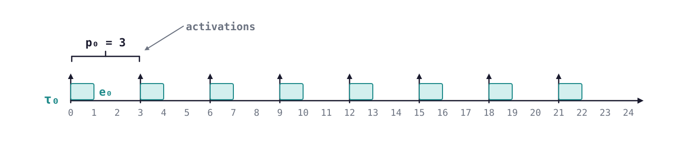</p> --- ### task model | **graphically** five tasks, **one** core <p>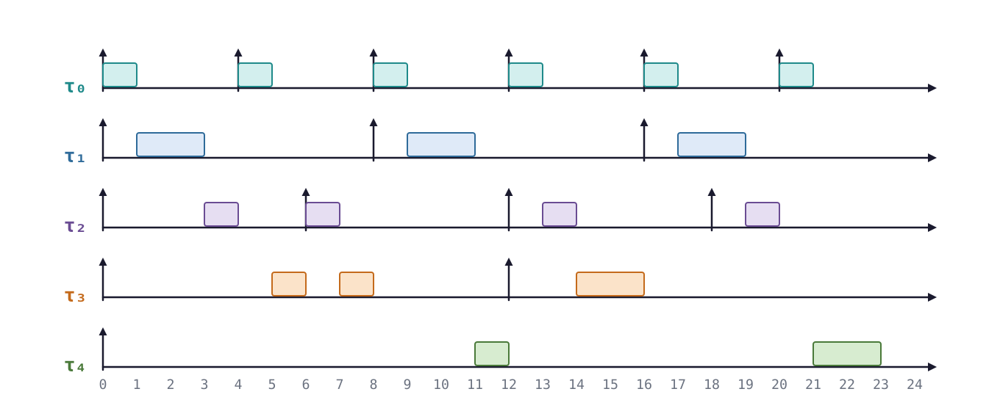</p> --- ### task model | **graphically** gaps → **preemptions** <p>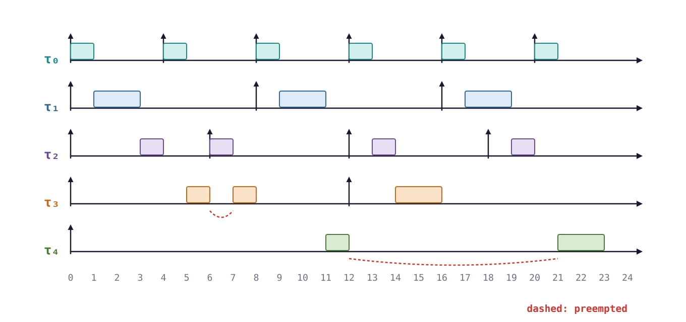</p> --- ### task model | **graphically** <div class="multicolumn" style="display: grid; grid-template-columns: 40% 60%; gap: 20px; align-items: center;"> <div> </div> <div> - preemptions → due to **prioritization** </div> </div> --- ### task model | **graphically** <div class="multicolumn" style="display: grid; grid-template-columns: 40% 60%; gap: 20px; align-items: center;"> <div> </div> <div> - preemptions → due to **prioritization** - **higher** priority tasks → preempt **lower** priority ones </div> </div> --- ### real-time | **priority** | scheduling | priority | rule | |---|---|---| | **fixed priority** [FP] | each task has a priority $\sigma_i$ | highest-priority active task runs | --- ### real-time | **priority** | scheduling | priority | rule | |---|---|---| | **fixed priority** [FP] | each task has a priority $\sigma_i$ | highest-priority active task runs | | **earliest deadline first** [EDF] | dynamic | task with the **earliest** deadline runs | || --- ### real-time | **priority** in Linux | policy | Linux | |---|---| | **FP** | <scb>SCHED_FIFO</scb> | | **EDF** | <scb>SCHED_DEADLINE</scb> | [we'll only discuss **FP**] --- ### fixed priority | **assignment** --- how do we **assign** a priority $\sigma_i$ to each task? --- ### example | **fixed priority** --- ### example | **fixed priority** one core, **preemptive** fixed priority --- ### example | **fixed priority** one core, **preemptive** fixed priority | task | $e_i$ | $p_i$ | priority | |---|---|---|---| | $\tau_{0}$ | <scb>2</scb> | <scb>5</scb> | **low** | | $\tau_{1}$ | <scb>4</scb> | <scb>10</scb> | **high** | <br> busy only <scb>8</scb> of every <scb>10</scb> time units --- will we meet **all** deadlines? --- ### example | **fixed priority** $\tau_{1}$ [high] runs first <p>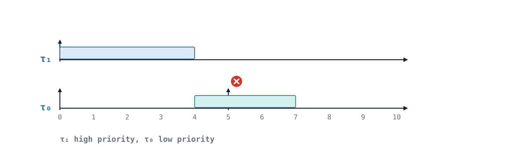</p> --- ### example | **fixed priority** $\tau_{1}$ [high] runs first ## **no!** --- ### example | **fixed priority** - $\tau_{0}$ starts at <scb>4</scb>, needs <scb>2</scb> - **misses** deadline at <scb>5</scb>! --- ideas? --- ### fixed priority | **rate monotonic** | period | rate | priority | |---|---|---| | **shorter** $p_i$ | **faster** | **higher** | --- ### fixed priority | **rate monotonic** | period | rate | priority | |---|---|---| | **shorter** $p_i$ | **faster** | **higher** | | **longer** $p_i$ | infrequent | lower | | **equal** $p_i$ | same | either [break ties **consistently**] | || --- ### fixed priority | **rate monotonic** $\tau_{0}$ [$p_0 = 5$] **above** $\tau_{1}$ [$p_1 = 10$] <p>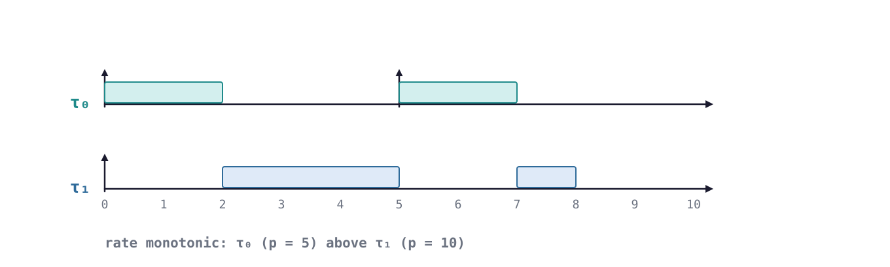</p> --- ### fixed priority | **rate monotonic** $\tau_{0}$ [$p_0 = 5$] **above** $\tau_{1}$ [$p_1 = 10$] ## **yes!** every deadline **met** --- ## why **task models**? --- ### why task models? model → talk about **precisely specified** idea... --- ### why task models? model → talk about **precisely specified** idea... ...rather than **messy** implementations --- ### why task models? model → talk about **precisely specified** idea... ...rather than **messy** implementations <br> ["all models are wrong, some are useful" — George Box] --- ### why task models? **implementation** → policies that instantiate a model --- ### why task models? **model** → mathematical description of implementation --- ### why task models? **analysis** → derive properties from the model --- **<span style="background-color: darkred; color: white;"> schedulable </span>** → can system meet **every** task's deadline? --- ### analysis | **schedulability** --- ### analysis | **schedulability** schedulability analysis: - **mathematical** analysis --- ### analysis | **schedulability** schedulability analysis: - **mathematical** analysis - uses **task model** --- ### analysis | **schedulability** schedulability analysis: - **mathematical** analysis - uses **task model** - which describes **implementation** --- ### analysis | **schedulability** schedulability analysis: - **mathematical** analysis - uses **task model** - which describes **implementation** <br> so system controls world **predictably**! --- ### response-time analysis | **RTA** --- ### response-time analysis | **RTA** assumes **fixed-priority** scheduling --- ### response-time analysis | **RTA** assumes **fixed-priority** scheduling **maximum** time to finish an activation? --- ### response-time analysis | **RTA** assumes **fixed-priority** scheduling **maximum** time to finish an activation? [Audsley, Burns _et al._, University of York → [paper](https://doi.org/10.1049/sej.1993.0034)] --- ### RTA | **intuition** over a window of time <scb>w</scb>... --- ### RTA | **intuition** over a window of time <scb>w</scb>... ...how much do **higher**-priority tasks **interfere**? --- ### RTA | **intuition** over a window of time <scb>w</scb>... ...how much do **higher**-priority tasks **interfere**? - $if_i(w)$ → **interference** on $\tau_i$ within <scb>w</scb> --- ### RTA | **intuition** **higher**-priority tasks **interfere** → within window <scb>$w$</scb> - $if_i(w)$ → **interference** on $\tau_i$ within <scb>$w$</scb> $$if_i(p_i) + e_i > p_i$$ - deadline **missed** - **not** schedulable! --- how would **you** calculate interference? --- ### example | **interference** --- ### example | interference **scenario I** | task | $e_i$ | $p_i$ | priority | |---|---|---|---| | $\tau_{0}$ | <scb>2</scb> | <scb>5</scb> | low | | $\tau_{1}$ | <scb>4</scb> | <scb>10</scb> | **high** | || --- ### example | interference **scenario I** interference on $\tau_{0}$? <p>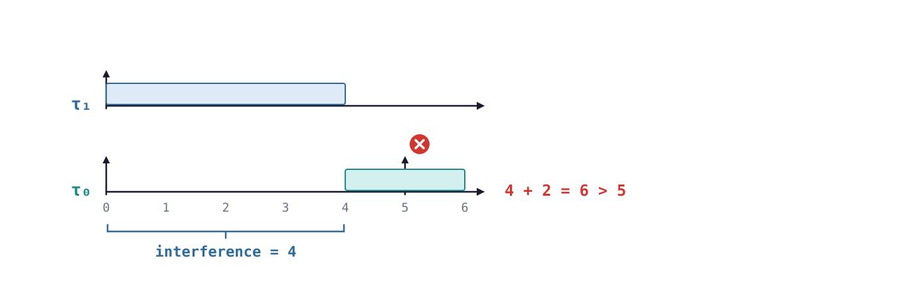</p> --- ### example | interference **scenario II** | task | $e_i$ | $p_i$ | priority | |---|---|---|---| | [**<font color="teal">teal</font>**] $\tau_{0}$ | <scb>1</scb> | <scb>3</scb> | **high** | | [**<font color="blue">blue</font>**] $\tau_{1}$ | <scb>3</scb> | <scb>6</scb> | middle | | [**<font color="purple">purple</font>**] $\tau_{2}$ | <scb>1</scb> | <scb>9</scb> | low | interference on $\tau_{2}$? --- ### example | interference **scenario II** $\tau_{0}$ runs first [highest] <p>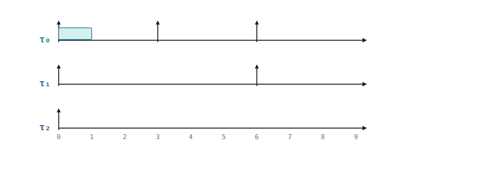</p> --- ### example | interference **scenario II** $\tau_{1}$ runs <p>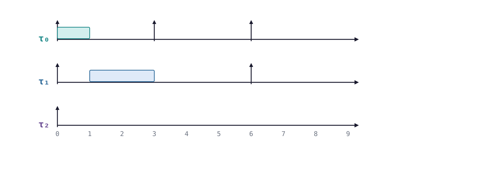</p> --- ### example | interference **scenario II** $\tau_{0}$ activates again → **preempts** $\tau_{1}$ <p>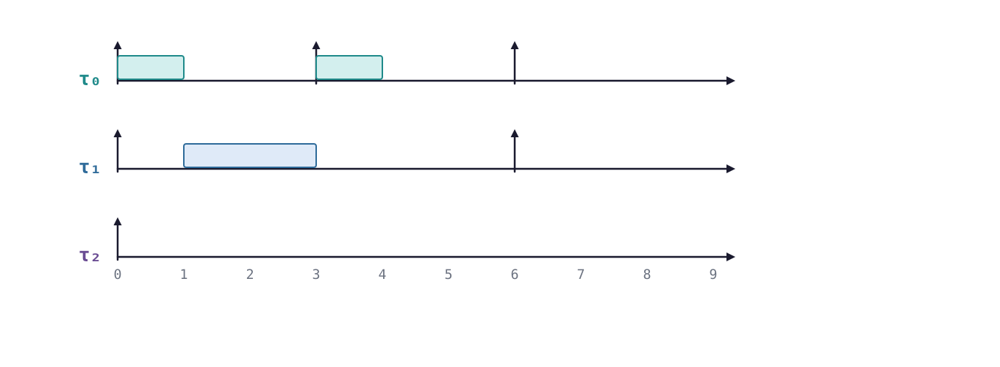</p> --- ### example | interference **scenario II** $\tau_{1}$ finishes <p>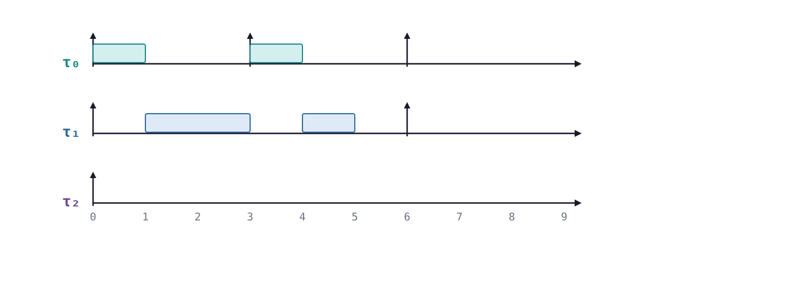</p> --- ### example | interference **scenario II** finally $\tau_{2}$ → done at <scb>6</scb> <p>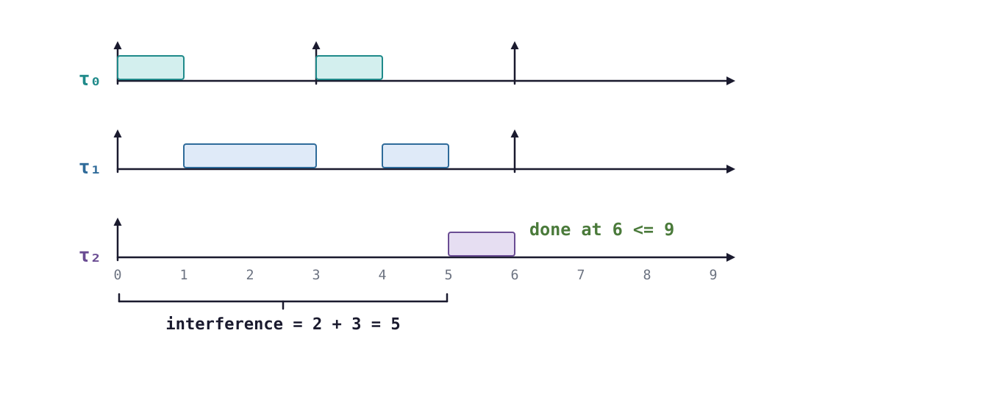</p> --- can we **compute** this without drawing? --- ### RTA | **the equation** --- ### RTA | **notation** | symbol | meaning | |:---:|---| | $e_i$ | WCET of $\tau_i$ | --- ### RTA | **notation** | symbol | meaning | |:---:|---| | $e_i$ | WCET of $\tau_i$ | | $p_j$ | period of $\tau_j$ | --- ### RTA | **notation** | symbol | meaning | |:---:|---| | $e_i$ | WCET of $\tau_i$ | | $p_j$ | period of $\tau_j$ | | $HP(i)$ | tasks with **higher** priority than $\tau_i$ | --- ### RTA | **notation** | symbol | meaning | |:---:|---| | $e_i$ | WCET of $\tau_i$ | | $p_j$ | period of $\tau_j$ | | $HP(i)$ | tasks with **higher** priority than $\tau_i$ | | $w^{n}$ | window at iteration <scb>$n$</scb> | || --- $$RTA_i(w^{n}) = e_i + \sum_{j \in HP(i)} \left\lceil \frac{RTA_i(w^{n-1})}{p_j} \right\rceil \cdot e_j$$ --- $$RTA_i(w^{n}) = e_i + \sum_{j \in HP(i)} \color{darkred}{\left\lceil \frac{RTA_i(w^{n-1})}{p_j} \right\rceil} \cdot e_j$$ <br> within the window → how many **activations** of a higher-priority task? --- $$RTA_i(w^{n}) = e_i + \sum_{j \in HP(i)} \left\lceil \frac{RTA_i(w^{n-1})}{p_j} \right\rceil \cdot \color{darkred}{e_j}$$ <br> each activation → interferes for its **execution** time --- $$RTA_i(w^{n}) = e_i + \color{darkred}{\sum_{j \in HP(i)}} \left\lceil \frac{RTA_i(w^{n-1})}{p_j} \right\rceil \cdot e_j$$ <br> do this for **every** higher-priority task in $HP(i)$ --- $$RTA_i(w^{n}) = \color{darkred}{e_i} + \sum_{j \in HP(i)} \left\lceil \frac{RTA_i(w^{n-1})}{p_j} \right\rceil \cdot e_j$$ <br> don't forget our **own** execution time! --- ### RTA | **iteration** window <scb>$w$</scb> **grows** → more interference fits in it --- ### RTA | **iteration** window <scb>$w$</scb> **grows** → more interference fits in it 1. start with $w = e_i$ --- ### RTA | **iteration** window <scb>$w$</scb> **grows** → more interference fits in it 1. start with $w = e_i$ 2. recompute until it **stops** changing --- ### RTA | **iteration** window <scb>$w$</scb> **grows** → more interference fits in it 1. start with $w = e_i$ 2. recompute until it **stops** changing 3. converged → **response time**! --- ### example | **RTA** --- ### example | **RTA** scenario II, $\tau_{2}$: - $e_2 = 1$ - $p_2 = 9$ --- ### example | **RTA** $RTA_2(1) = 1 + \lceil 1/6 \rceil \cdot 3 + \lceil 1/3 \rceil \cdot 1 = \mathbf{5}$ <p>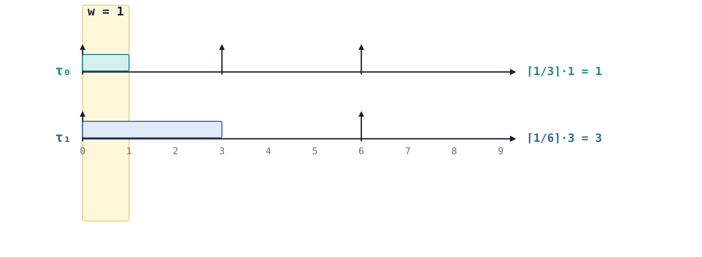</p> --- ### example | **RTA** $RTA_2(5) = 1 + \lceil 5/6 \rceil \cdot 3 + \lceil 5/3 \rceil \cdot 1 = \mathbf{6}$ <p>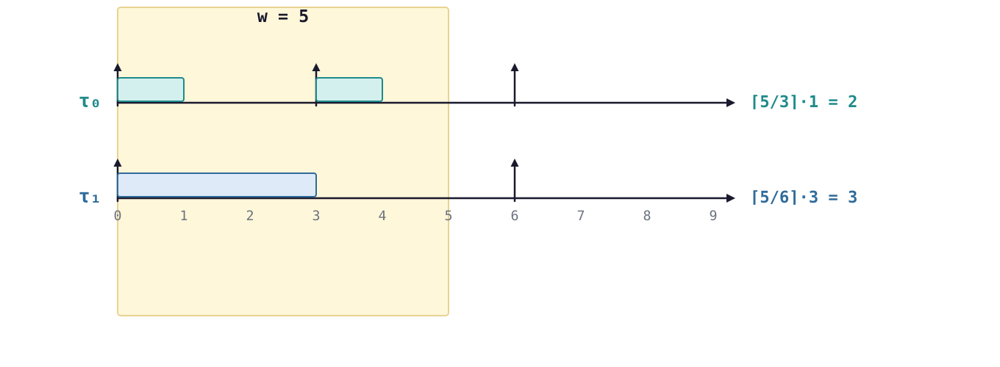</p> --- ### example | **RTA** $RTA_2(6) = 1 + \lceil 6/6 \rceil \cdot 3 + \lceil 6/3 \rceil \cdot 1 = \mathbf{6}$ <p>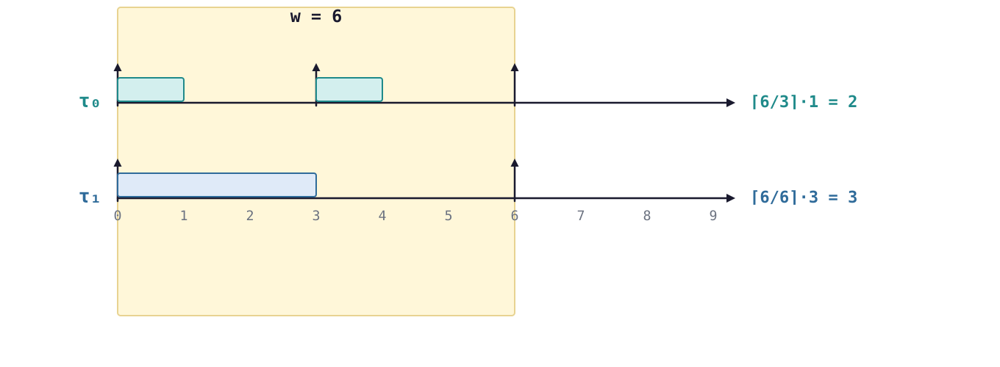</p> --- ### example | **RTA** <scb>6</scb> = <scb>6</scb> → **converged** --- ### example | **RTA** <scb>6</scb> = <scb>6</scb> → **converged** <br> <scb>6</scb> ≤ <scb>9</scb> → deadline **<span style="background-color: green; color: white;"> met! </span>** --- ### example | **RTA II** now make $\tau_{2}$ slightly **longer**: - $e_2 = 2$ --- ### example | **RTA II** | window | calculation | RTA | |---|---|---| | <scb>2</scb> | $2 + \lceil 2/6 \rceil \cdot 3 + \lceil 2/3 \rceil \cdot 1$ | <scb>6</scb> | --- ### example | **RTA II** | window | calculation | RTA | |---|---|---| | <scb>2</scb> | $2 + \lceil 2/6 \rceil \cdot 3 + \lceil 2/3 \rceil \cdot 1$ | <scb>6</scb> | | <scb>6</scb> | $2 + \lceil 6/6 \rceil \cdot 3 + \lceil 6/3 \rceil \cdot 1$ | <scb>7</scb> | --- ### example | **RTA II** | window | calculation | RTA | |---|---|---| | <scb>2</scb> | $2 + \lceil 2/6 \rceil \cdot 3 + \lceil 2/3 \rceil \cdot 1$ | <scb>6</scb> | | <scb>6</scb> | $2 + \lceil 6/6 \rceil \cdot 3 + \lceil 6/3 \rceil \cdot 1$ | <scb>7</scb> | | <scb>7</scb> | $2 + \lceil 7/6 \rceil \cdot 3 + \lceil 7/3 \rceil \cdot 1$ | **<scb>11</scb>** | || --- ### example | **RTA II** | window | calculation | RTA | |---|---|---| | <scb>2</scb> | $2 + \lceil 2/6 \rceil \cdot 3 + \lceil 2/3 \rceil \cdot 1$ | <scb>6</scb> | | <scb>6</scb> | $2 + \lceil 6/6 \rceil \cdot 3 + \lceil 6/3 \rceil \cdot 1$ | <scb>7</scb> | | <scb>7</scb> | $2 + \lceil 7/6 \rceil \cdot 3 + \lceil 7/3 \rceil \cdot 1$ | **<scb>11</scb>** | <br> <scb>11</scb> > <scb>9</scb> → **<span style="background-color: darkred; color: white;"> not schedulable </span>**! --- ### example | **RTA II** sanity check → **utilization** --- ### example | **RTA II** sanity check → **utilization** - $U$ → fraction of CPU time tasks **need** - $U = \sum_i \frac{e_i}{p_i}$ --- ### example | **RTA II** sanity check → **utilization** $$U = \frac{1}{3} + \frac{3}{6} + \frac{2}{9} \approx 1.06 > 1$$ --- ### example | **RTA II** sanity check → **utilization** $$U = \frac{1}{3} + \frac{3}{6} + \frac{2}{9} \approx 1.06 > 1$$ tasks need **more** CPU time than exists → hopeless anyway! --- let's write RTA in <sc>C</sc> --- ```C /* rta.c: response-time analysis for fixed-priority tasks (index 0 = highest priority) */ #include <stdio.h> int ceil_div(int a, int b) { return (a + b - 1) / b; } int rta(int i, int e[], int p[]) { int w = e[i], r; for (;;) { r = e[i]; for (int j = 0; j < i; j++) /* higher-priority tasks */ r += ceil_div(w, p[j]) * e[j]; printf(" RTA%d(%d) = %d\n", i, w, r); if (r == w || r > p[i]) return r; /* converged, or past deadline */ w = r; } } int main(void) { int e1[] = {1, 3, 1}, e2[] = {1, 3, 2}, p[] = {3, 6, 9}; for (int k = 0; k < 2; k++) { int *e = k ? e2 : e1; printf("e2 = %d:\n", e[2]); int r = rta(2, e, p); printf(" -> %d %s %d: %s\n", r, r <= p[2] ? "<=" : ">", p[2], r <= p[2] ? "schedulable" : "NOT schedulable"); } return 0; } ``` --- ```C [4|8|11|12-13|15|16|22] /* rta.c: response-time analysis for fixed-priority tasks (index 0 = highest priority) */ #include <stdio.h> int ceil_div(int a, int b) { return (a + b - 1) / b; } int rta(int i, int e[], int p[]) { int w = e[i], r; for (;;) { r = e[i]; for (int j = 0; j < i; j++) /* higher-priority tasks */ r += ceil_div(w, p[j]) * e[j]; printf(" RTA%d(%d) = %d\n", i, w, r); if (r == w || r > p[i]) return r; /* converged, or past deadline */ w = r; } } int main(void) { int e1[] = {1, 3, 1}, e2[] = {1, 3, 2}, p[] = {3, 6, 9}; for (int k = 0; k < 2; k++) { int *e = k ? e2 : e1; printf("e2 = %d:\n", e[2]); int r = rta(2, e, p); printf(" -> %d %s %d: %s\n", r, r <= p[2] ? "<=" : ">", p[2], r <= p[2] ? "schedulable" : "NOT schedulable"); } return 0; } ``` --- ```C /* rta.c: response-time analysis for fixed-priority tasks (index 0 = highest priority) */ #include <stdio.h> int ceil_div(int a, int b) { return (a + b - 1) / b; } int rta(int i, int e[], int p[]) { int w = e[i], r; for (;;) { r = e[i]; for (int j = 0; j < i; j++) /* higher-priority tasks */ r += ceil_div(w, p[j]) * e[j]; printf(" RTA%d(%d) = %d\n", i, w, r); if (r == w || r > p[i]) return r; /* converged, or past deadline */ w = r; } } int main(void) { int e1[] = {1, 3, 1}, e2[] = {1, 3, 2}, p[] = {3, 6, 9}; for (int k = 0; k < 2; k++) { int *e = k ? e2 : e1; printf("e2 = %d:\n", e[2]); int r = rta(2, e, p); printf(" -> %d %s %d: %s\n", r, r <= p[2] ? "<=" : ">", p[2], r <= p[2] ? "schedulable" : "NOT schedulable"); } return 0; } ``` --- ### RTA | **output** ``` $ ./rta e2 = 1: RTA2(1) = 5 RTA2(5) = 6 RTA2(6) = 6 -> 6 <= 9: schedulable e2 = 2: RTA2(2) = 6 RTA2(6) = 7 RTA2(7) = 11 -> 11 > 9: NOT schedulable ``` --- ### RTA | **output** [stops early once <scb>r > p</scb> → deadline already **missed**] --- ### real-time | **what have we done?** --- ### real-time | **what have we done?** 1. created a **task model** --- ### real-time | **what have we done?** 1. created a **task model** 2. backed up by an **implementation** [FP scheduler] --- ### real-time | **what have we done?** 1. created a **task model** 2. backed up by an **implementation** [FP scheduler] 3. **analyzed** model - RTA passes for **all** tasks - **schedulable**! --- <center><div class="center" data-id="box" style="height: 75px; width: 1140px; background: orange;"> we can <b>prove</b> system meets its physical deadlines! </div></center> --- ### RTA | **practical concerns** --- ### RTA | **practical concerns** 1. **shared resources** - locks around shared data structures --- ### practical concerns | **locks** 1. low-priority task takes a **lock** <p>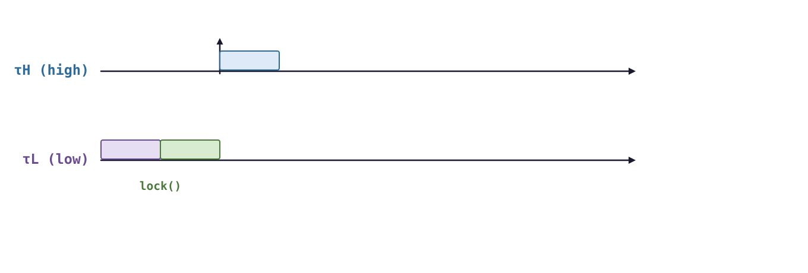</p> --- ### practical concerns | **locks** 2. high-priority task **preempts** it <br> tries lock → **blocks**! <p>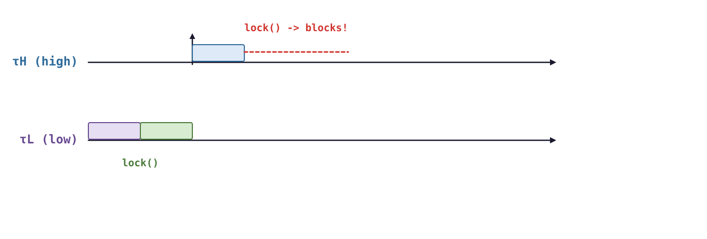</p> --- ### practical concerns | **locks** 3. low finishes critical section <br> → **then** high runs <p>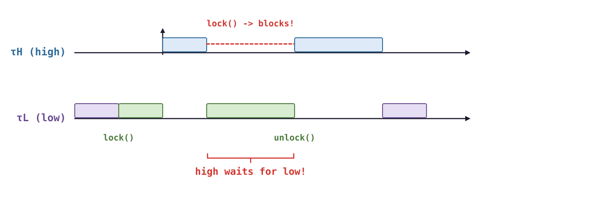</p> --- ### practical concerns | **locks** high-priority task → suffers **low-priority** interference --- ### practical concerns | **locks** high-priority task → suffers **low-priority** interference <br> <center><div class="center" data-id="box" style="height: 75px; width: 500px; background: orange;"> <b>priority inversion!</b> </div></center> --- ### practical concerns | **locks** high-priority task → suffers **low-priority** interference <br> <center><div class="center" data-id="box" style="height: 75px; width: 500px; background: orange;"> <b>priority inversion!</b> </div></center> <br> [_e.g._ [Mars Pathfinder, 1997](https://www.cs.cornell.edu/courses/cs614/1999sp/papers/pathfinder.html) → resets on Mars!] --- ### RTA | **practical concerns** 2. **context switches** aren't free - every task suffers **dispatch latency*** <br> [* time to stop one task and start the next] --- ### RTA | **extended** $$RTA_i(w^{n}) = e_i + \color{darkred}{B_i} + \sum_{j \in HP(i)} \left\lceil \frac{RTA_i(w^{n-1})}{p_j} \right\rceil \cdot (e_j + \color{darkred}{2 e_{swtch}})$$ --- ### RTA | **extended** | term | meaning | | :---: | --- | | $B_i$ | longest **blocking** on lower-priority critical section | --- ### RTA | **extended** | term | meaning | | :---: | --- | | $B_i$ | longest **blocking** on lower-priority critical section | | $2 e_{swtch}$ | switch **to** and **away** from each higher-priority job | || --- ### RTA | **blocking** | protocol | blocked how often? | |---|---| | **priority ceiling** | at most **once** → single $B_i$ | --- ### RTA | **blocking** | protocol | blocked how often? | |---|---| | **priority ceiling** | at most **once** → single $B_i$ | | plain **priority inheritance** | once **per lock** | || --- RTA → very **extensible**! --- ### RTA | **multicore** | scheduling | runqueues | analysis | |---|---|---| | **partitioned** | each core has **own** tasks | RTA **per core**! | --- ### RTA | **multicore** | scheduling | runqueues | analysis | |---|---|---| | **partitioned** | each core has **own** tasks | RTA **per core**! | | **global** | all cores share **one** runqueue | needs **another** analysis <br> [less common] | || --- ### RTOS | **complexity** real systems → tasks **communicate** <p>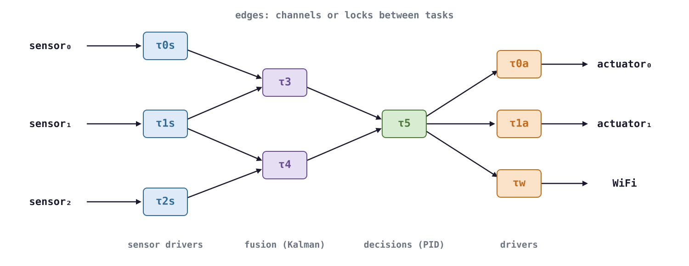</p> --- ### RTOS | **complexity** Mars Curiosity rover → ~<scb>240</scb> tasks! --- ## seeing the **words** from the **bits** --- so, why not use real-time scheduling **everywhere**? --- so, why not use real-time scheduling **everywhere**? - needs periods + WCETs **up front** - general workloads → **don't** have them --- ### two schedulers | aspect | real-time | Linux [CFS, EEVDF] | |---|---|---| | assumptions | **strong** [periods, WCETs] | almost **none** | --- ### two schedulers | aspect | real-time | Linux [CFS, EEVDF] | |---|---|---| | assumptions | **strong** [periods, WCETs] | almost **none** | | parameters | from task model | **heuristics** [<scb>20</scb> ms, <scb>4</scb> ms] | --- ### two schedulers | aspect | real-time | Linux [CFS, EEVDF] | |---|---|---| | assumptions | **strong** [periods, WCETs] | almost **none** | | parameters | from task model | **heuristics** [<scb>20</scb> ms, <scb>4</scb> ms] | | result | **guarantees** | good **average** behaviour | --- ### two schedulers | aspect | real-time | Linux [CFS, EEVDF] | |---|---|---| | assumptions | **strong** [periods, WCETs] | almost **none** | | parameters | from task model | **heuristics** [<scb>20</scb> ms, <scb>4</scb> ms] | | result | **guarantees** | good **average** behaviour | | general purpose? | | | --- ### two schedulers | aspect | real-time | Linux [CFS, EEVDF] | |---|---|---| | assumptions | **strong** [periods, WCETs] | almost **none** | | parameters | from task model | **heuristics** [<scb>20</scb> ms, <scb>4</scb> ms] | | result | **guarantees** | good **average** behaviour | | general purpose? | **<span style="background-color: darkred; color: white;"> no </span>** | **<span style="background-color: green; color: white;"> yes </span>** | || --- which is **better**? --- which is **better**? depends on: - **goals** - **assumptions**! --- **next topic** → memory allocation